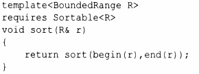
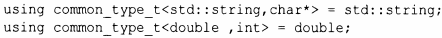
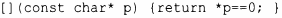

⇐12.6 Обзор алгоритмов 12.8 Алгоритмы над контейнерами⇒
В конце концов алгоритмы стандартной библиотеки будут определены с использованием концептов (глава 7, "Концепты и обобщенное программирование"). Предварительные обсуждения этого вопроса можно найти в Ranges Technical Specification [37], а реализации можно найти в Интернете. Концепты определены в <experimental/Ranges>, но, надеюсь, что-то очень похожее будет добавлено в пространство имен std в С++20.
Диапазоны Range представляют собой обобщение последовательностей С++98, определяемых парами begin () /end (). Диапазон - это понятие, определяющее, что может представлять собой последовательность элементов. Его можно определить как
Этот концепт Range позволяет писать sort(v), а не sort(v.begin(), v.end()) , как нам приходится работать с STL с 1994 года. Например:
Отношением для SortaЫe по умолчанию является less.
В дополнение к Range спецификация Ranges TS предлагает множество полезных концептов. Эти концепты находятся в <experirnental/Ranges/ concepts>. Точные их определения можно найти в [37].
| Фундаментальные концепты языка | |
|---|---|
| Same<T,U> | T представляет собой тот же тип, что и U |
| DerivedFrom<T,U> | T является производным от U |
| ConvertibleTo<T,U> | T может быть преобразован в U |
| CommonReference<T,U> | T и U совместно используют общий ссылочный тип |
| Common<T,U> | T и U совместно используют общий тип |
| Integral<T> | T является целочисленным типом |
| Signedintegral<T> | T является знаковым целочисленным типом |
| Unsignedintegral<T> | T является беззнаковым целочисленным типом |
| Assignable<U,T> | U может быть присвоен T |
| SwappableWith<T,U> | T может быть обменен с U |
| Swappable<T> | SwappableWith<T,T> |
Cornrnon важен для указания алгоритмов, которые должны работать с различными связанными типами, оставаясь надежным с математической точки зрения. Common<T,U> - это тип с, который можно использовать для сравнения Т с U, сначала преобразуя оба значения в тип С. Например, мы можем захотеть сравнить std::string со строкой в стиле С (char*) или значения int и double, но не std::string с int. Для этого соответствующим образом специализируется cornrnon_tуре_t, используемый в определении Cornrnon:
Определение Common немного сложнее, но решает сложную фундаментальную проблему. К счастью, нам не нужно определять специализацию common_tуре_t, если только мы не хотим использовать операции над смешанными типами, для которых библиотека (пока еще) не имеет подходящих определений. Common или CommonReference используется в определениях большинства концептов и алгоритмов, которые могут сравнивать значения разных типов.
На концепты, связанные со сравнением, сильно повлияла книга [40].
| Концепты сравнений | |
|---|---|
| Boolean<T> | T может использоваться как булева величина |
| WeaklyEqualityComparableWith<T,U> | T и U моrут сравниваться на равенство с использованием операторов == и != |
| WeaklyEqualityComparable<T> | WeaklyEqualityComparaЬleWith<T,T> |
| EqualityComparableWith<T,U> | T и U моrут сравниваться на равенство с использованием оператора == |
| EqualityComparable<T> | EqualityComparableWith<T,T> |
| StrictTotallyOrderedWith<T,U> | T и U моrут сравниваться с использованием операторов <, <=, > и >=,дающих полное упорядочение |
| StrictTotallyOrdered<T> | StrictTotallyOrderedWith<T,T> |
Применение как WeaklyEqualityComparableWith, так и WeaklyEqualityComparable демонстрирует отсутствие (до настоящего времени) возможности перегрузки.
| Концепты, связанные с объектами | |
|---|---|
| Destructible<T> | T может быть уничтожен, а его адрес может быть получен с помощью унарного оператора & |
| Constructible<T,Args> | T может быть построен из списка арrументов типа Args |
| DefaultConstructible<T> | T может быть создан с помощью конструктора по умолчанию |
| MoveConstructible<T> | T может быть создан с помощью перемещающего конструктора |
| CopyConstructible<T> | T может быть создан с помощью копирующего и перемещающего конструкторов |
| Моvаblе<T> | MoveConstructable<T>, Assignable<T&,T> и Swapable<T> |
| Соруаblе<T> | CopyConstructable<T>,Moveable<T> и Assignable<T, const Т&> |
| Semiregular<T> | Соруаblе<T> и DefaultConstructable<T> |
| Regular<T> | SemiRegular<T> и EqualityComparable<T> |
Regular - идеал для типов. Тип, соответствующий концепту Regular, грубо говоря, работает как int и упрощает большую часть наших размышлений о том, как использовать этот тип (§7.2). Отсутствие по умолчанию оператора == для классов означает, что большинство классов относятся к SemiRegular, хотя большинство из них могут и должны быть Regular.
| Концепты, связанные с вызовами | |
|---|---|
| Invocable<F, Args> | F может быть вызван со списком аргументов типа Args |
| InvocableRegular<F,Args> | Invocable<F, Args> и сохраняет равенство |
| Predicate<F, Args> | F может быть вызван со списком аргументов типа Args и возвращает bool |
| Relation<F,T,U> | Predicate<F,T,U> |
| StrictWeakOrder<F,T,U> | Relation<F,T,U>, предоставляющий строгое слабое упорядочение |
Функция f() называется сохраняющей равенство (equality preserving), если из х==у следует, что f (х)==f (у).
Строгое слабое упорядочение (strict weak ordering) - это то, что стандартная библиотека обычно предполагает для сравнений, таких как <; поищите соответствующую информацию в учебниках или Интернете, если вас заинтересовал этот вопрос.
Relation и StrictWeakOrder различаются только семантикой. Мы не можем (в настоящее время) представить это различие в коде, поэтому просто выражаем наши намерения с помощью имен.
| Концепты, связанные с итераторами | |
|---|---|
| Iterator<I> | К I могут быть применены операторы инкремента ( ++) и разыменования(*) |
| Sentinel<S,I> | S является ограничителем для типа итератора, т.е. S является предикатом над значением типа I |
| SizedSentinel<S,I> | Ограничитель S, где к I может быть применен оператор - |
| Inputlterator<I> | I - входной итератор; оператор * может быть применен только для чтения |
| Outputlterator<I> | I - выходной итератор; оператор * может быть применен только для записи |
| Forwardlterator<I> | I - однонаправленный итератор, поддерживающий многопроходность |
| Bidirectionallterator<I> | I - Forwardlterator с поддержкой оператора -- |
| RandomAccessiterator<I> | I - Bidirectionaliterator с подцержкой операторов+,-,+=,-= и [] |
| Permutable<I> | I - Forwarditerator<I>, где I разрешает перемещать и обменивать элементы |
| Mergeable<Il,I2,R,O> | Можно сливать отсортированные последовательности, определяемые I1 и I2, в O с использованием Relation<R> |
| Sortable<I> | Можно сортировать последовательности, определяемые I, с использованием отношения меньше |
| Sortable<I,R> | Можно сортировать последовательности, определяемые I, с использованием Relation<R> |
Различные разновидности (категории) итераторов используются для выбора наилучшей реализации для данного алгоритма; см. §7.2.2 и §13.9.1. Пример Inputiterator см. в §12.4.
Основная идея ограничителя состоит в том, что мы можем перебирать диапазон, начиная с определенного итератора, пока для элемента не станет истинным указанный предикат. Таким образом, итератор р и ограничитель s определяют диапазон [p:s ( *р)). Например, мы могли бы определить предикат для ограничения для обхода строки в стиле С, используя в качестве итератора указатель:
Изложение информации о MergeaЫe и SortaЫe в данной книге упрощено по сравнению с [37].
| Концепты диапазонов | |
|---|---|
| Range<R> | R представляет собой диапазон с начальным итератором и ограничителем |
| SizedRange<R> | R представляет собой диапазон с получением размера за константное время |
| View<R> | R представляет собой диапазон с копированием, перемещением и прием за константное время |
| BoundedRange<R> | R представляет собой диапазон с идентичными типами итератора и ограничителя |
| InputRange<R> | R представляет собой диапазон, тип итератора которого удовлетворяет концепту Inputiterator |
| OutputRange<R> | R представляет собой диапазон, тип итератора которого удовлетворяет концепту Outputiterator |
| OutputRange<R> | R представляет собой диапазон, тип итератора которого удовлетворяет концепту Forwarditerator |
| BidirectionalRange<R> | R представляет собой диапазон, тип итератора которого удовлетворяет концепту Bidirectionallterator |
| RandomAccessRange<R> | R представляет собой диапазон, тип итератора которого удовлетворяет концепту RandomAccessI terator |
В [37] имеются и другие концепты, но для начала вполне достаточно и этих.